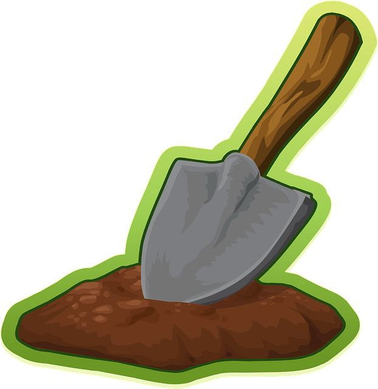
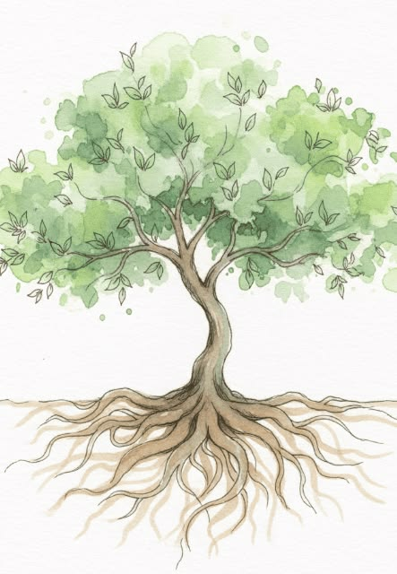

Ideas, cuentos y personas; espacio que ocupa; orden.Clase: (1) cantidad de espacio (2) propósito (3) orden estratégico (4) movimiento de menor a mayor / clímax.
 Solo teoría
Solo teoría
Método Inductivo
Guía teórica para el examen
Un texto fuera de contexto solamente es un pretexto.
Paleta
Desliza
El método bíblico
Tres pasos. Propósito: cambiar nuestra vida.
1

Observación ¿Qué es lo que veo?
2
 Interpretación
¿Qué significa esto?
Interpretación
¿Qué significa esto?
3

Aplicación ¿Cómo funciona esto?Propósito del estudio bíblico:
Cambiar nuestra vida.
Este examen es teórico · sin aplicación práctica
Preguntas de teoría
Las marcadas con ★ importan para el examen. Toca para revelar.
-
- Crecimiento espiritual — 1 Pedro 2:2 «Desead, como niños recién nacidos, la leche espiritual no adulterada, para que por ella crezcáis para salvación.»
- Madurez espiritual — Hebreos 5:11-14
- Eficiencia espiritual — 2 Timoteo 3:16-17
-
- Método: Pasos para llegar.
- Metodología: Procesos por los cuales tenemos que caminar para llegar a un resultado.
-
- Observación — ¿Qué es lo que veo?
- Interpretación — ¿Qué significa esto?
- Aplicación — ¿Cómo funciona esto?
-
Cambiar nuestra vida.
La Biblia
Tarjetas cortas. Toca para voltear.
¿Qué es la Biblia?
tocar
66 libros; se origina con la historia de Israel; palabra de Dios; inspirada por Dios (no por el hombre; es espiritual).
2 Timoteo 3:16
Una sola historia
tocar
Cuenta una sola historia → Jesús.
Idiomas
tocar
Hebreo, Griego, Arameo.
Escrita en el lenguaje de nuestro corazón.
Géneros
tocar
Al observar también
Más allá del verso
Las 10
Nombres exactos de la guía. Lista o flashcards.
-
Leer para entender.Ej. de clase: planifica y prepárate; lee como detective — Prov 2:4.
-
Libros completos; diferentes versiones; leer 10 veces.
-
Pacientes con el texto y nosotros; cada parte con énfasis a una palabra distinta.
-
¿Quién? ¿Qué? ¿Dónde? ¿Cuándo? ¿Por qué? ¿Y entonces qué?
-
Todo pasaje se puede convertir en una oración.
-
Imaginar ayuda a entender; diferentes traducciones; otro idioma; pedir a otras personas que lo lean.
-
Meditar = Rumear; meditar todo el tiempo; sustituir pensamientos habituales por la palabra.
-
Estructura (verbo, sujeto, adjetivo…); conectores; estructuras biográfica, geográfica, histórica, cronológica, ideológica.Buscar intencionalmente → búsqueda de sujeto, verbo, preposición. Útil en Hechos 1:8: verbos futuros «recibiréis» / «seréis» y el contraste con «pero».
-
Leer → identificas → pones en práctica; hacer mío el pasaje.
-
Contexto; relacionar cada pasaje con la historia completa de la Biblia.Ej. Hechos 1:8: Jerusalén → Judea → Samaria → lo último de la tierra = bosquejo de Hechos. «Un texto fuera de contexto solamente es un pretexto.»
Buscar intencionalmente → búsqueda de sujeto, verbo, preposición.
1
tocar para revelar
Leer con la mente
1 / 10
Las 6
Observación: «juntando toda la información». Toca para revelar.
ERRSDR
Frases, términos, etc.Clase: palabras o frases; personajes constantes; circunstancias que se repiten.
Interacción; interconexión; causa → efecto.Clase: preguntas y respuestas; causa y efecto.
Similitudes; metáforas.Clase: «La Puerta», «La Luz del Mundo».
Contraste; metáforas con contraste.Clase: «y» / «pero» marca diferencia → contraste. En Hechos 1:8 el «pero» es clave.
Apropiarnos del pasaje; cosas relacionadas con mi vida.Clase: que se relacione conmigo, mi vida, circunstancias o dificultades.
Ejemplo anotado en clase
Hechos 1:8
«…pero recibiréis poder, cuando haya venido sobre vosotros el Espíritu Santo, y me seréis testigos…»
Jerusalén→
Judea→
Samaria→
lo último de la tierra
El cuadro
Tabla de observación del ejemplo de clase. Toca un encabezado o una celda.
MARCOS 4:35 – 5:42
Cuatro milagros · toca columna o celda
↔ Desliza horizontalmente en móvil
Este es el cuadro del ejemplo de clase (Marcos). En otros pasajes se diseñan columnas que encajen con el texto.
Para memorizar
Trucos rápidos para el día del examen.
Las 6 · juntando toda la información
ERRSDR
Enfatizadas · Repetidas · Relacionadas · Similares · Diferentes · Relativas a la vida
Cadena de las 10
- Con la mente leer para entender
- Repetidamente completo · 10 veces
- Con paciencia énfasis por palabra
- Selectivamente 6 preguntas
- Orando pasaje → oración
- Imaginando traducciones · otros
- Meditando rumear · todo el tiempo
- Intencionalmente estructura · conectores
- Adquisitivamente hacer mío el pasaje
- Telescópicamente contexto · historia completa
Quiz
Importancia, método, pasos, las 10, las 6 y el cuadro. Respuestas al instante.
Tu puntaje
0/16